전파전자통신기사 (2013-10-12 기출문제)
1과목: 디지털전자회로
1. 다음 중 정전압 회로의 안정도 파라미터에 해당되지 않는 것은?
- 전압안정계수
- 온도안정계수
- 출력저항
- 출력직류전압
(정답률: 알수없음)

2. 정류회로 출력 성분중 교류인 리플을 제거하기 위해 정류회로 다음 단에 접속되는 회로는 무엇인가?
- 평활회로
- 클램핑회로
- 정전압회로
- 클리핑회로
(정답률: 알수없음)
3. 반파정류회로를 사용한 전원설비를 전파정류회로로 변경하면 리플률은 어떻게 변화되는가?
- 약 1.5배 증가한다.
- 약 2.5배 감소한다.
- 약 3.5배 증가한다.
- 약 4.5배 감소한다.
(정답률: 알수없음)
4. 그림과 같은 에미터폴로우 회로에서 h-파라메타가 hle=2.1[kΩ], h1e=100이고, R1=10kΩ], R2=10[kΩ], Re=4[kΩ]일 때, 입력저항은 약 얼마인가?
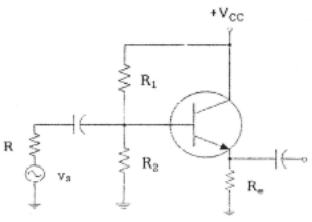
- 402[kΩ]
- 404[kΩ]
- 406[kΩ]
- 408[kΩ]
(정답률: 알수없음)
5. 다음과 같은 연산증폭기 회로의 출력 전압은?
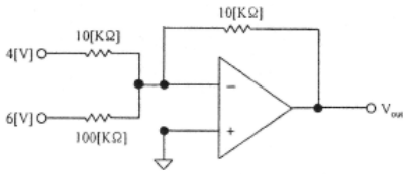
- -64[V]
- -4.6[V]
- +64[V]
- +4.6[V]
(정답률: 알수없음)
6. 다음중 FET(Field Effect Transistor)에 대한 설명으로 옳지 않은 것은?
- 입력저항이 수 [MΩ]으로 매우 크다.
- 다수캐리어에 의해 동작하는 단극성 소자이다.
- 접합트랜지스터(BJT)보다 잡음이 심하다.
- 이득대역폭이 좁다.
(정답률: 알수없음)
7. 다음 주어진 회로에서 정선으로 표시된 회로의 기능이 아닌 것은?
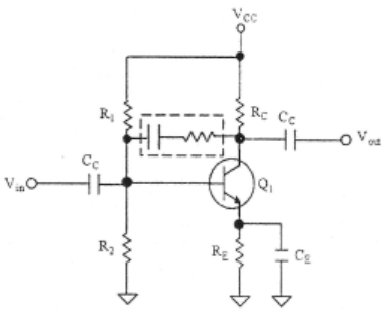
- 증폭 이득을 조절할 수 있다.
- 입출력 임피던스를 조절할 수 있다.
- 대역폭을 조절할 수 있다.
- 온도 특성을 조절할 수 있다.
(정답률: 알수없음)
8. 다음중 발진조건에 대한 설명으로 틀린 것은?
- 궤환증폭기의 이득(A)과 궤환율(β)의 곱이 1보다 작으면 발진 진폭이 감소한다.
- 궤환증폭시 입력신호와 궤환신호의 위상이 180° 차이가 난다.
- 증폭된 출력의 일부를 입력쪽으로 정궤환시켜야 한다.
- 발진이 지속될 수 있는 상태를 유지하기 위해서는 βA=1 조건을 만족해야 한다.
(정답률: 알수없음)
9. 수정발진기는 어떤 효과를 이용한 것인가?
- 차폐효과
- 압전기 효과
- 홀 효과
- 제에벡 효과
(정답률: 알수없음)
10. 다음중 위상변조에 대한 설명으로 틀린 것은?
- 위상을 변조신호에 의해 직선적으로 변하게 하는 방식이다.
- 변조지수는 위상감도계수에 비례한다.
- PM방식을 사용하여 FM신호를 만들 수 있다.
- 반송파를 중심으로 3개의 측파대를 가지며 그 크기는 변조지수에 관계된다.
(정답률: 알수없음)
11. 펄스부호변조(PCM) 방식에서 아날로그 신호를 디지털 신호로 변환시키는 과정을 바르게 나타낸 것은?
- 표본화 → 양자화 → 부호화 → 압축
- 표본화 → 부호화 → 양자화 → 압축
- 표본화 → 양자화 → 압축 → 부호화
- 표본화 → 압축 → 양자화 → 부호화
(정답률: 알수없음)
12. RC 회로의 출력에서 최종치의 10[%]~90[%]까지 얻는데 소요되는 시간을 무엇이라 하는가?
- 지연 시간
- 하강 시간
- 상승 시간
- 전이 시간
(정답률: 알수없음)
13. 다음 그림과 같은 주기적인 펄스파형의 듀티비(Duty Ratio)는 얼마인가? (단, to=30[μs], T=150[μs])
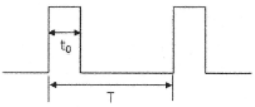
- 10[%]
- 12[%]
- 20[%]
- 22[%]
(정답률: 알수없음)
14. 다음 그림에서 정논리의 경우 게이트 명칭은?
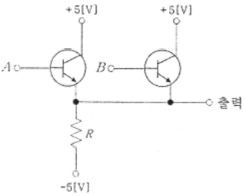
- AND 게이트
- OR 게이트
- NAND 게이트
- NOR 게이트
(정답률: 알수없음)
15. 플립플롭은 몇 개의 안정 상태를 갖는가?
- 1
- 2
- 4
- ∞
(정답률: 알수없음)
16. 십진수 10.375를 2진수로 변환하면?
- 1011.101(2)
- 1010.101(2)
- 1010.011(2)
- 1011.110(2)
(정답률: 알수없음)
17. 조합 논리 회로 중 0과 1의 조합으로 부호화를 행하는 회로로 2n개의 입력선과 n개의 출력 선으로 구성된 것은?
- 디코더(Decoder)
- DEMUX
- MUX
- 인코더(Encoder)
(정답률: 알수없음)
18. 다음 중 계수형 전자 계산기(Digital Computer)의 보조 기억 장치가 아닌 것은?
- 자기 드럼(Magnetic Drum)
- 자기 테이프(Magnetic Tape)
- 자기 디스크(Magnetic Disk)
- 자기 코어(Magnetic Core)
(정답률: 알수없음)
19. 플립플롭 4개로 구성된 계수기가 가질 수 있는 최대의 2진 상태는 몇 가지인가?
- 8가지
- 12가지
- 16가지
- 20가지
(정답률: 알수없음)
20. 다음 회로는 어떤 회로인가?
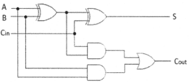
- 반가산기 2개와 OR게이트를 이용한 전가산기 회로
- 반가산기 3개와 OR게이트를 이용한 전가산기 회로
- 반가산기 2개와 NOR게이트를 이용한 전가산기 회로
- 반가산기 3개와 NOR게이트를 이용한 전가산기 회로
(정답률: 알수없음)
2과목: 무선통신기기
21. 완충증폭기의 특징이 아닌 것은?
- 발진기와 일반적으로 밀결합한다.
- 부하의 변동이 발진기에 미치는 영향을 최소화한다.
- 출력단은 일반적으로 LC 동조회로로 구성한다.
- 일반적으로 A급 또는 AB급을 사용한다.
(정답률: 알수없음)
22. 8PSK 시스템에서 전송 심벌 간 위상차는?
- π/8
- π/4
- π/2
- π
(정답률: 알수없음)
23. 16QAM 변조기 출력 신호 g(t) = 0.821 + 0.821의 경우 출력 위상의 크기는?
- 45°
- 90°
- 315°
- 225°
(정답률: 알수없음)
24. BPSK 방식에서 데이터(Data)의 신호 속도는 얼마인가?
- 1[bps]
- 2[bps]
- 4[bps]
- 8[bps]
(정답률: 알수없음)
25. 다음 중 GPS시스템에 대한 설명으로 적합하지 않은 것은?
- GPS는 시간과 장소에 관계없이 항체의 3차원적 위치, 속도 및 시간에 대해 연속적 정보를 제공한다.
- GPS의 우주부문은 모두 24개의 위성으로 구성되며 12시간을 주기로 지구 주위를 회전한다.
- 정확한 위치 측정을 위해서 4개 이상의 위성으로부터 정보가 필요하다.
- GPS 위치측정오차 원인에 전리층의 굴절은 포함되지 않는다.
(정답률: 알수없음)
26. 다음 중 Inmarsat-C에 대한 설명으로 옳지 않은 것은?
- 텔렉스 기능이 있다.
- 안테나는 무지향성이다.
- 전화 기능이 있다.
- EGC 기능이 있다.
(정답률: 알수없음)
27. 다음 중 긴급통신(송ㆍ수신)을 할 수 없는 것은?
- Inmarsat 위성 통신 장비
- VHF DSC
- NBDP
- EPIRB
(정답률: 알수없음)
28. 마이크로파 회선에서 전송 품질 평가와 가장 관계가 적은 요소는?
- S/N비
- 수신기의 열잡음
- 송신 전계 강도의 변화
- 전과의 간섭 잡음
(정답률: 알수없음)
29. 다음 중 의무선박에 탑재하는 설비로 406[MHz] 주파수를 사용하는 GMDSS 무선설비는?
- VHF DSC
- NAVTEX
- Inmarsat C
- COSPAS-SARSAT EPIRB
(정답률: 알수없음)
30. 다음 중 Inmarsat-C의 전파형식은?
- J3E
- G1B
- G1E
- A1A
(정답률: 알수없음)
31. GMDSS 선박의 항행구역 구분에 대한 설명 중 옳지 않은 것은?
- A1 해역 : 초단과대(VHF) 해안국의 무선전화 통신범위 안의 해역
- A2 해역 : 중파대(MF)해안국의 무선전화 통신범위 안의 해역으로 A1해역을 제외한 해역
- A3 해역 : Inmarsat 위성통신권 범위 안의 해역으로 A1해역 및 A2 해역을 제외한 해역
- A4 해역 : A1ㆍA2ㆍA3해역 외의 해역
(정답률: 알수없음)
32. VHF DSC로 조난호출을 하는 선박에서 조난통신문 작성시에 필요로 하는 내용이 아닌 것은?
- 조난 종류(상태)
- 조난 선박의 위치(위도ㆍ경도)
- 필요로 하는 구조의 종류
- 선장 성명
(정답률: 알수없음)
33. 다음 중 인버터에 요구되는 기능으로 올바르지 않은 것은?
- 직류분 제어기능
- 고효율 제어
- 저조파 억제
- 고주파 억제
(정답률: 알수없음)
34. 통신 고주파 분야에서 어느 고주파 신호를 그보다 낮은 중간 주파수로 변환하는 부분을 무엇이라고 하는가?
- Inverter
- Translator
- Mixer
- Converter
(정답률: 알수없음)
35. 무정전 전원장치(UPS)의 일반적인 시스템 구성 회로가 아닌 것은?
- 컨버터
- 인버터
- AC, DC 필터
- 임펄스 정형회로
(정답률: 알수없음)
36. 1,000명의 가입자가 있는 기지국에 1시간당 120통화가 발생하였고 1통화당 1분간을 사용하였다면 통화부하는 가입자당 몇 얼랑(Erlang)인가?
- 1[mErlang]
- 2[mErlang]
- 10[mErlang]
- 20[mErlang]
(정답률: 알수없음)
37. 우리나라의 NAVTEX 시스템에서 사용하는 주파수와 사용언어를 바르게 짝지은 것은?
- 490[kHz] - 국문
- 490[kHz] - 영어
- 518[kHz] - 국문
- 4209.5[kHz] - 영어
(정답률: 알수없음)
38. 다음은 NAVTEX 메시지 포맷의 일부를 나타낸 것이다. 밑줄 친 부분의 의미를 바르게 표현한 것은?
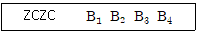
- 해사안전정보
- 메시지일련번호
- 방송국 식별문자
- 위상동기신호의 종료
(정답률: 알수없음)
39. 송신 안테나의 높이가 36[m]이고 수신 안테나의 높이가 25[m]일 때 기하학적 가시거리는 약 얼마인가?
- 29.27[km]
- 39.27[km]
- 49.27[km]
- 59.27[km]
(정답률: 알수없음)
40. 60[AH](암페어시)의 용량을 갖는 축전지를 10시간 방전한다고 하면 최대 몇 [A]로 사용할 수 있는가?
- 2[A]
- 6[A]
- 10[A]
- 20[A]
(정답률: 알수없음)
3과목: 안테나공학
41. 평면파(plane wave)와 관련된 설명으로 잘못된 것은?
- 진행 방향에 대해서 전계와 자계가 서로 직각을 이룬다.
- 자유 공간에서의 특성 임피던스는 주파수와 무관하다.
- 안테나로부터 복사되는 전자파는 평면파이지만 먼 거리에서는 구면파로 된다.
- 전자계내의 모든 점에서의 전계와 자계의 비를 파동 임피던스라고 한다.
(정답률: 알수없음)
42. 자유공간의 단위 면적당 단위 시간에 통과하는 전자파 에너지가 3[μW/m]이었다. 이 때이 자유공간의 전계강도는 약 얼마인가?
- 8.45[mV/m]
- 16.81[mV/m]
- 33.63[mV/m]
- 45.65[mV/m]
(정답률: 알수없음)
43. 다음 중 단파대의 전파 특성으로 적합하지 않은 것은?
- 대전력으로 근거리 통신이 가능하다.
- 공전 방해를 적게 받는다.
- 페이딩, 에코, 산란 등의 영향을 받는다.
- 지향성이 양호한 송수신 안테나 이용이 용이하다.
(정답률: 알수없음)
44. 다음 전자파의 설명 중 잘못된 것은?
- 자유공간에서는 빛의 속도와 같다.
- 자유공간의 특성 임피던스는 E/H [Ω]이다.
- 포인팅 벡터(Poynting vector)는 E2/120π[W/m2]이다.
- 자유공간에서 전계와 자계는 직각이고 진행방향은 자계방향이다.
(정답률: 알수없음)
45. 신호주파수가 1[MHz] 일 때, 특성임피던스 Z0=300[Ω]인 동축급전선과 입력임피던스 R=200[Ω]인 안테나 사이에 집중정수회로로 정합시키는 경우 인덕턴스 (L)는 약 몇 [μH]인가?
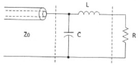
- 11.3 [μH]
- 22.5 [μH]
- 35.2 [μH]
- 50.0 [μH]
(정답률: 알수없음)
46. 부하 임피던스가 특성 임피던스의 3배일 때 종단에서의 전압, 전류의 반사계수는 각각 얼마인가?
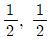
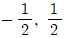
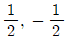
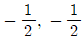
(정답률: 알수없음)
47. 반파장 다이폴에서 전류 급전을 하는 경우 안테나 길이는 얼마인가? (단, λ는 파장이다.)
- λ
- λ/2
- λ/3
- λ/4
(정답률: 알수없음)
48. 다음중 동조급전방식에 대한 설명으로 옳은 것은?
- 송신기와 안테나 사이의 거리가 멀수록 많이 사용한다.
- 전압급전일 때 직렬공진의 급전회로를 사용하려면 급전선의 길이를 λ/4의 기수배로 사용한다.
- 정합장치가 불필요하다.
- 임피던스 정합회로를 사용하므로 진행파가 급전된다.
(정답률: 알수없음)
49. 길이 30[m]인 반파장 다이폴 안테나의 고유파장과 고유주파수는 각각 얼마인가?
- 고유파장 30[m], 고유주파수 7.5[MHz]
- 고유파장 60[m], 고유주파수 5[MHz]
- 고유파장 30[m], 고유주파수 5[MHz]
- 고유파장 60[m], 고유주파수 7.5[MHz]
(정답률: 알수없음)
50. 동일한 주파수를 사용하고 있는 λ/4 수직접지 안테나와 λ/2 다이폴 안테나에 동일한 전류가 흐를 때 복사전력의 비는 약 얼마인가?
- 1 : 2
- 2 : 1
- 1 : √2
- √2 : 1
(정답률: 알수없음)
51. 다음중 안테나의 손실저항이 발생하는 원인이 아닌 것은?
- 복사저항에 의한 손실
- 연장선륜 저항에 의한 손실
- 도체 저항에 의한 손실
- 유전체에 의한 손실
(정답률: 알수없음)
52. 안테나 이득에 대한 설명으로 틀린 것은?
- 절대이득은 무손실 등방성 안테나를 기준으로 한 이득이다.
- 절대이특은 마이크로파용 입체 안테나의 이득을 표시하는데 사용된다.
- 상대이득은 반파장 다이폴 안테나를 기준으로 한 이특이다.
- 상대이득은 접지 안테나의 이득을 표시하는데 주로 사용된다.
(정답률: 알수없음)
53. 안테나의 반치각에 대한 설명으로 틀린 것은?
- 전계패턴에서는 1/√2 최대복사 전계강도의 되는 두 방향 사이의 각이다.
- 전력패턴에서는 최대복사 전력의 1/2 되는 두 방향 사이의 각이다.
- 부엽의 최소복사 방향에 대해 3[dB]되는 두 방향 사이의 각이다.
- 주엽의 최대복사 방향에 대해 -3[dB]되는 두 방향 사이의 각이다.
(정답률: 알수없음)
54. 주파수 3[MHz]를 고유주파수로 하는 반파장 다이폴 안테나의 길이는?
- 10
- 25
- 50
- 100
(정답률: 알수없음)
55. 다음 중 대류권 산란파의 특징으로 옳은 것은?
- 지향특성이 강한 안테나를 사용하여야 한다.
- 지리적 제약을 많이 받는다.
- 다이버시티 방식에 의하여 페이딩을 방지할 수 있다.
- 저출력 송신기의 가능하다.
(정답률: 알수없음)
56. 다음 중 AGC나 AVC 등을 사용하여 억제 할 수 있는 페이딩이 아닌 것은?
- 덕트형 페이딩
- 감쇠형 페이딩
- K형 페이딩
- 신틸레이션 페이딩
(정답률: 알수없음)
57. 대류권 전파에서 '라디오 덕트'가 발생하는 원인이 아닌 것은?
- 야간냉각에 의한 덕트
- 이류성 덕트
- 상승기류가 생기는 현상에 의한 덕트
- 전선에 의한 덕트
(정답률: 알수없음)
58. 제1 프레넬영역(Fresnel Zone)의 반경에 대한 설명 중 옳은 것은?
- 송신점과 수신점 사이의 거리의 제곱근에 반비례한다.
- 파장에 비례한다.
- 송신점과 장애물 사이의 거리에 비례한다.
- 수신점과 장애물 사이의 거리에 비례한다.
(정답률: 알수없음)
59. 다음 중 주로 지표파에 의하여 전파되며 대지의 도전율과 가장 관련이 깊은 주파수대는?
- 장중파
- 단파
- 초단파
- 마이크로파
(정답률: 알수없음)
60. 지구의 반경(R)을 6,370[km]라고 할 때 표준대기 굴절율 n=1.000313 이고 대류권 내의 전파통로의 높이를 300[m]라 하면 M단위의 수정굴절율은 약 얼마인가?
- 303
- 324
- 353
- 360
(정답률: 알수없음)
4과목: 통신영어 및 교통지리
61. Choose the incorrect translation for the underlined parts.
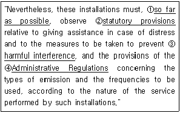
- 가능한 멀리
- 법규정
- 유해한 혼신
- 업무규칙
(정답률: 알수없음)
62. Choose the incorrect translation for the underlined parts.
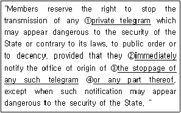
- 개인 전보
- 즉시
- 이러한 전보의 중지
- 전부의
(정답률: 알수없음)
63. Choose the incorrect translation for the underlined parts.
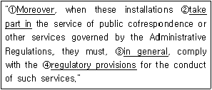
- 또한
- 부분을 차지 하다
- 일반적으로
- 규정
(정답률: 알수없음)
64. Choose the incorrect translation in those underlined parts.
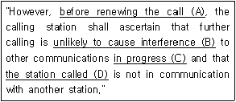
- A : 호출을 시작한 후에
- B : 간섭을 야기할 가능성이 없는
- C : 통신중인
- D : 피호출국
(정답률: 알수없음)
65. Choose the proper meanings of the sentence below.
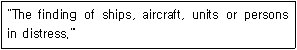
- Determining
- Searching
- Finding
- Locating
(정답률: 알수없음)
66. Choose the incorrect answer for the following question on radiotelephonic conversation.
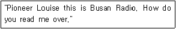
- read you loud and clear over.
- Send your message over.
- Say again your last over.
- I read you weak but readable over.
(정답률: 알수없음)
67. 아래의 구운 통화 표에서 악센트가 없는 것은 어느 것인가?
- M---MIKE
- R---ROW ME OH
- X---ECKS RAY
- Z---ZOO LOO
(정답률: 알수없음)
68. What is the phonetic Alphabet code for telephone and radio correspondence of the following letter. "L"
- Kilo
- Lima
- Mike
- November
(정답률: 알수없음)
69. Choese the incorrect accent one in the following phonetic alphabet.
- C : CHAR LEE
- I : IN DEE AH
- J : JEW LEE ETT
- P : PAH PAH
(정답률: 알수없음)
70. 아래의 문장이 뜻하는 것은?
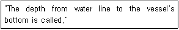
- freeboard
- draft
- distance
- breadth
(정답률: 알수없음)
71. What do we call 'Shaft tunnel' in Korean?
- 통로
- 측로
- 선로
- 축로
(정답률: 알수없음)
72. Choose the wrong translation for the following sentence.
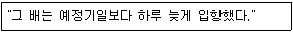
- The ship entered port one day early in arriving.
- The ship entered port one day behind the schedule.
- The ship entered port later than the expected time by one day.
- The ship entered port one day later than the scheduled time.
(정답률: 알수없음)
73. 다음 해상무선표 지국과 짝지은 표지부호가 틀린 것은 어느 것인가?
- 거문도 등대 무선표지국 - KM
- 죽도 등대 무선표지국 - CK
- 어청도 등대 무선표지국 - EC
- 주문진 동대 무선표지국 - JM
(정답률: 알수없음)
74. Fill in the blank with the correct word.
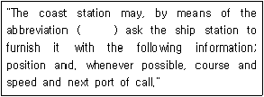
- QRK
- TR
- PBL
- CQ
(정답률: 알수없음)
75. 다음의 해안국 중 Red Sea에 위치하지 않은 도시는?
- Jeddah
- Kosseir
- Assab R
- Alexandria
(정답률: 알수없음)
76. 다음 중 AMVER 통신에 관한 설명으로 옳지 않은 것은?
- 항해하는 선박의 안전 및 경제적 운항을 위해 항로를 추천하는 제도이다.
- 해상에 있어서 사고 미연방지, 조난 시 위치추적을 한다.
- 미국 해안경비대 (USCG)에 의해 무료로 운용된다.
- 수색과 구조(Search and Rescue)업무를 행한다.
(정답률: 알수없음)
77. 인도네시아의 수마트라(Sumatra)섬과 쟈바(Java)섬 사이에 있는 해협으로 북쪽의 쟈바해와 남쪽의 인도양을 연결하며, 폭은 약 25~100km, 길이는 약 150km인 해협의 이름은 무엇인가?
- Molucca Passage
- Lombok Straits
- Sunda Straits
- Malacca Straits
(정답률: 알수없음)
78. 다음 중 INMARSAT 해안지구국명이 아닌 것은?
- FUCINO
- ANTWERP
- EIK
- AUSSAGUEL
(정답률: 알수없음)
79. 미국 Atlantic Coast 의 Virginia에 위치해 있고 대서양의 해상기상방송을 팩스로 하고 있는 기상통보국은?
- Norfolk Radio
- Kodiak Radio
- Mobile Radio
- Boston Radio
(정답률: 알수없음)
80. 일본에서 정시각에 영어 보통어로 선박의 항행을 위한 기상 방송을 하는 무선국은?
- 해상 보안청 본청/JNA
- 일본 기상청 본청/JMC
- 표준주파수국/JJY
- 관동통제 통신 사무소/JGC
(정답률: 알수없음)
5과목: 전파관계법규
81. 다음 중 무선국의 허가증에 기재사항이 아닌 것은?
- 무선국의 목적
- 시설자의 주소
- 허가의 유효기간
- 무선설비의 설치장소
(정답률: 알수없음)
82. 다음 중 미래창조과부가 주파수분배 시 고려하여야 하는 사항에 속하지 않는 것은?
- 국제적인 주파수 사용동향
- 전파이용기술의 발전추세
- 중ㆍ장기 주파수 이용계획
- 전파를 이용하는 서비스에 대한 수요
(정답률: 알수없음)
83. '무선국의 개설을 허가함에 있어서 당해 무선국이 이용할 특정한 주파수를 지정하는 것'에 해당되는 용어는?
- 주파수 분배
- 주파수 할당
- 주파수지정
- 점유 주파수대
(정답률: 알수없음)
84. 선박이나 항공기에 의무적으로 개설하여야 하는 무선국을 제외한 무선국 개설허가의 유효기간은 최대 몇년인가?
- 3년
- 5년
- 7년
- 10년
(정답률: 알수없음)
85. 무선종사자의 기술자격의 취소 사유가 아닌 것은?
- 거짓이나 그 밖의 부정한 방법으로 기술자격을 취득한 경우
- 준공검사를 받지 아니하고 무선국을 운용한 경우
- 허가 또는 신고 사항의 범위를 벗어나 무선국을 운용한 경우
- 실험국과 아마추어국이 암어를 사용하지 않고 통신한 경우
(정답률: 알수없음)
86. 다음 중 무선통신의 원칙과 거리가 먼 것은?
- 필요한 사항만 교신한다.
- 사용하는 용어는 가능한 자세히 풀어서 교신한다.
- 정확히 교신하며, 통신오류를 인지한 때는 즉시 정정한다.
- 지국의 호출부호를 붙여 출처를 명확히 한다.
(정답률: 알수없음)
87. 무선국의 개설 조건으로 틀린 것은?
- 통신사항이 개설조건에 적합할 것
- 개설목적을 달성하는 데 필요한 최대한의 주파수 및 공중선전력을 사용할 것
- 개설목적 통신사항 및 통신상대방의 선정이 법령에 위반되지 않을 것
- 무선설비는 인명 재산 및 항공의 안전에 지장을 주지 아니하는 장소에 설치할 것
(정답률: 알수없음)
88. 육상의 특정 지점에 개설하여 해상이동위성업무를 하는 지구국은?
- 해안국
- 해안지구국
- 선상통신국
- 일반지구국
(정답률: 알수없음)
89. 심사에 의한 주파수 할당시 심사사항이 아닌 것은?
- 전파자원 이용의 효율성
- 신청자의 기술적 능력
- 신청자의 사업규모의 광역성
- 할당하려는 주파수의 특성이나 그 밖에 주파수 이용에 필요한 사항
(정답률: 알수없음)
90. 전파법령에 의한 용어 정의가 바르게 표현된 것은?
- "레이더"란 해상에서 반사 또는 재발사되는 무선신호와 기준신호와의 비교를 기초로 하는 무선탐지 설비를 말한다.
- "무선항행"이란 항행을 위하여 행하는 무선탐지를 말한다.
- "무선방향탐지"란 무선국 또는 물체의 방향을 결정하기 위하여 전파를 송신하여 행하는 무선측위를 말한다.
- "무선측위"란 전파의 전파특성을 이용하여 위치ㆍ속도 및 기타 사물의 특징에 관한 정보를 취득하는 것을 말한다.
(정답률: 알수없음)
91. 다음 무선국 중 허가 신고 없이 개설할 수 있는 것은?
- 적합성평가를 받은 무선기기로서 미래창조과학부가 정한 주파수를 이용하여 개설하는 생활무선국용 무선기기
- 간이무선국용 무선설비 중 휴대용 무선기기
- 전파천문업무를 하는 수신전용 무선기기
- 기지국과 통신하기 위하여 개설하는 육상이동국용 무선설비 중 휴대용 무선기기
(정답률: 알수없음)
92. 헌장과 협약의 다양한 언어본에 틀린 부분이 있는 경우에는 어떤 언어가 우선하는가?
- 영어
- 프랑스어
- 아랍어
- 러시아어
(정답률: 알수없음)
93. 다음 중에서 전권위원회의와 관계 없는 사항은 어느 것인가?
- 4년마다 개최된다.
- 연합의 목적 달성을 위한 전반적인 정책을 결정한다.
- 이사회를 구성할 회원국을 선출한다.
- 연합 활동의 효율적인 조정을 확보하며, 효과적인 재정적 관리를 행한다.
(정답률: 알수없음)
94. 다음 중 국제전기통신연합의 목적으로 적합하지 않는 것은?
- 전기통신업무의 효율을 증진하고 유용성 증대
- 전기통신부분에 있어서 개발도상국에 대한 기술지원 장려 및 제공
- 모든 종류의 전기통신의 개선과 합리적인 이용을 위한 회원국 간의 국제적인 협력 유지 및 증진
- 세계평화와 안전의 유지 및 국민복지의 증진을 위한 국제 협력의 촉진
(정답률: 알수없음)
95. 다음 중 국제전기통신연합 헌장 제26조의 관련규정과 협약의 관련조항에 언급된 모든 문제에 관하여 사무총장을 보좌하고 조언하는 곳은?
- 이사회
- 전파규칙위원회
- 조정위원회
- 사무총국
(정답률: 알수없음)
96. 선박의 조난사고발생시 신속한 조난을 수신하여 통합적인 수색구조작업을 할 수 있도록 지원하는 세계해상조난 및 안전 제도를 나타낸 것은?
- INMARSAT
- GMDSS
- INTELSAT
- IMO
(정답률: 알수없음)
97. 비밀은 중요성과 가치의 정도에 따라 Ⅰ급비밀ㆍⅡ급비밀 및 Ⅲ급비밀로 구분한다. 이중 누설되는 경우 대한민국과 외교관계가 단절되고 전쟁을 유발하며, 국가의 방위계획ㆍ정보활동 및 국가방위상 필요불가결한 과학과 기술의 개발을 위태롭게 하는 등의 우려가 있는 사항은?
- Ⅰ급 비밀
- Ⅱ급 비밀
- Ⅲ급 비밀
- 대외비
(정답률: 알수없음)
98. 통신내용 및 정보자료를 비닉할 목적으로 사용하는 문자ㆍ숫자ㆍ기호 등으로 구성된 환자표 또는 암호논리 등을 저장한 문서나 도구로 Ⅲ급 비밀에만 적용이 가능한 보안자재는?
- 약호자재
- 암호자재
- 암호장비
- 음어자재
(정답률: 알수없음)
99. 통신보안의 제1차적 책임은 누구에게 있는가?
- 기관의 장
- 비밀 취급 인가권자
- 통신이용자
- 문서 수발자
(정답률: 알수없음)
100. 전파법에 따라 무선통신 업무에 종사하는 자의 통신보안 교육 의무로 맞는 것은?
- 국가 또는 지방자치단체가 아닌 자가 개설하는 무선국에 종사하는 자는 5년마다 1회의 통신보안 교육을 받아야 한다.
- 국가가 개설하는 무선국에 종사하는 자는 1년마다 1회의 통신보안 교육을 받아야 한다.
- 지방자치단체가 개설하는 무선국에 종사하는 자는 3년마다 1회의 통신보안 교육을 받아야 한다.
- 모든 무선국에 종사하는 자는 5년마다 1회의 통신보안 교육을 받아야 한다.
(정답률: 알수없음)